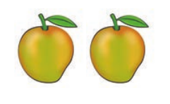
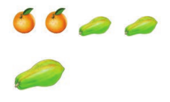

Singular and plural forms - dialogue and Exercise 1
Ali:I like mangoes.

Ann:What other fruits do you like?
Ali:I also like bananas.
Ann:What about you?
Ali:I like oranges and papayas.
Ann:How does a papaya taste?

Ali:It tastes sweet.
Exercise 1
1. Change the following words into singular or plural form:
| No. | Singular | Plural |
|---|---|---|
| 1. | flag | dash |
| 2. | dash | flowers |
| 3. | bird | dash |
| 4. | fox | dash |
| 5. | banana | dash |
| 6. | dash | berries |
| 7. | dash | pens |
| 8. | battery | dash |
| 9. | book | dash |
| No. | Singular | Plural |
|---|---|---|
| 10. | baby | dash |
| 11. | party | dash |
| 12. | dash | boxes |
| 13. | spy | dash |
| 14. | glass | dash |
| 15. | dash | cities |
| 16. | dash | dishes |
| 17. | class | dash |
| 18. | street | dash |